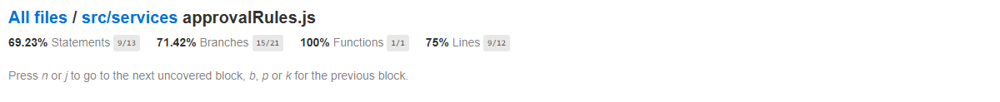
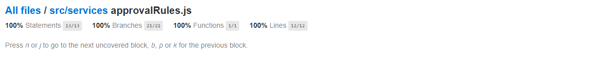

S08 / SKENARIO
Virtual QA
Pakailah nilai 999.999, 1.000.000 dan 1.000.001. Agent QA hanya mengubah test.
Durasi 10 menit · estimasi latihan
Cerita tim
Coverage turun dari 70% ke 45% dalam setahun tanpa ada yang sadar. Saat insiden, Hendra baru tahu modul approval hampir tidak punya test.
Yang disiapkan di repo
P8 — approvalRules.js coverage 0%, bug off-by-one di batas 1.000.000.
Lihat file dan kontrak
Test API tidak mencakup ambang → Test batas menemukan selisih
Pilihan solusi
Custom agent qa-engineer (read-only terhadap kode produksi): cari modul coverage rendah → tulis test dari acceptance criteria → test gagal → buka issue bug otomatis + PR test.
- Sari menyiapkan konteks.
- Agent mengerjakan latihan S08.
- Manusia memeriksa: Pakailah nilai 999.999, 1.000.000 dan 1.000.001. Agent QA hanya mengubah test.
Langkah demo
- Baca issue latihan dan kriteria selesai.
- Gunakan prompt atau perintah berikut. Prompt atau perintah
npm run coverage - Periksa hasil: Pakailah nilai 999.999, 1.000.000 dan 1.000.001. Agent QA hanya mengubah test.
Before / After




- Baseline
- Test API tidak mencakup ambang
- Target setelah latihan
- Test batas menemukan selisih
- Verifikasi
- Pakailah nilai 999.999, 1.000.000 dan 1.000.001. Agent QA hanya mengubah test.
- Before
- 75 % baris
- After
- 100 % baris
Vitest V8 · Asia/Jakarta · baseline vs demo/s08-qa-observation · kasus tepat Rp1.000.000 gagal seperti yang diharapkan.
Manfaat untuk tim
- QA bergeser dari bottleneck ke oversight; bug ditemukan sebelum produksi.
Bukti yang bisa diperiksa
- Issue GitHub · S08
S08-01-agent-picker.png· belum di-captureS08-02-bug-issue.png· belum di-capture
Screenshot dan metrik yang tidak tersedia tidak dianggap sebagai hasil live.
Ulangi latihan
Jalankan dari root repo latihan. Reset hanya menyentuh worktree lokal yang bersih.
npm run reset